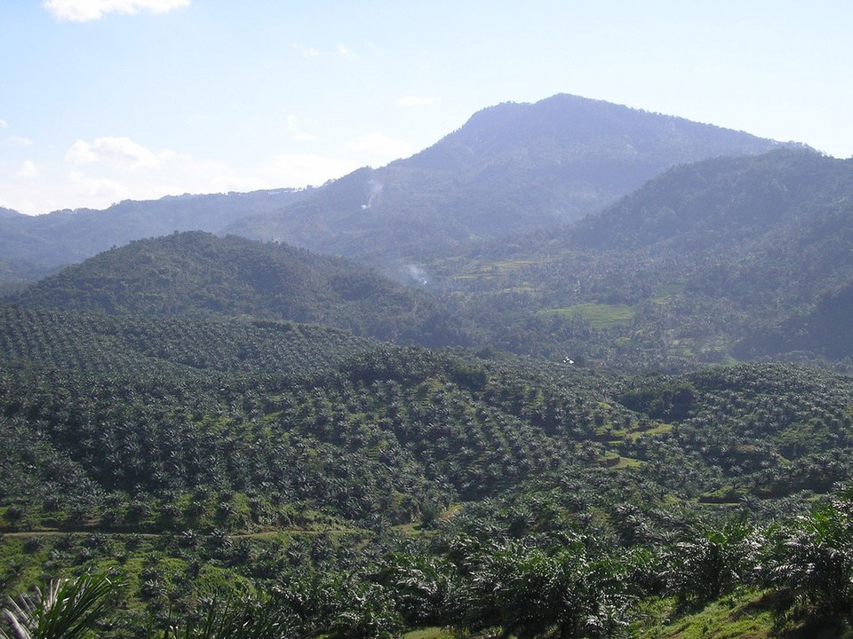
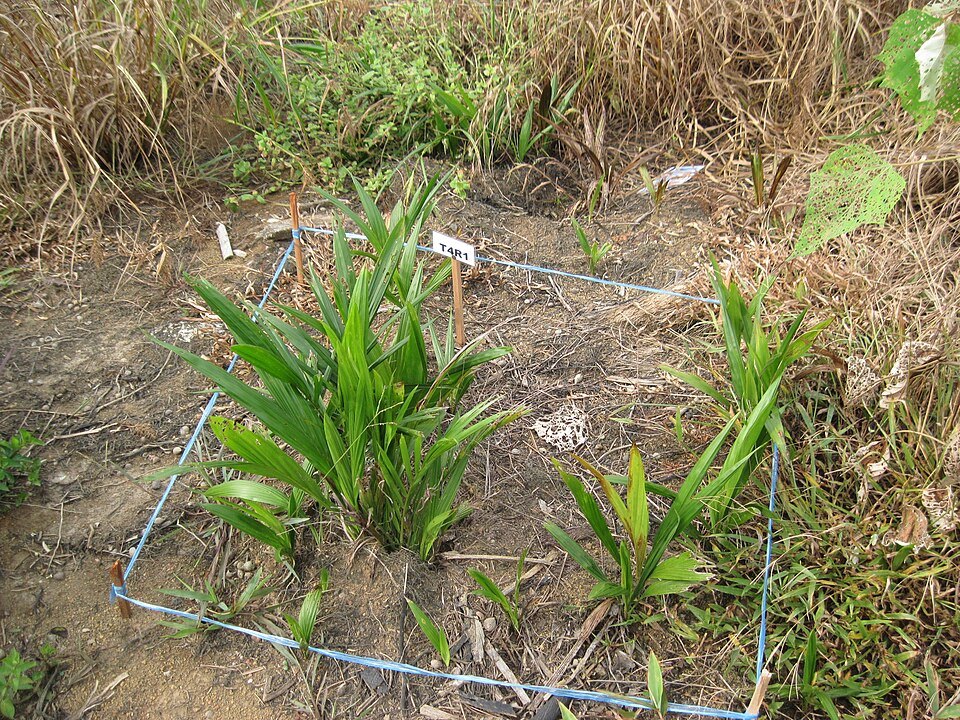
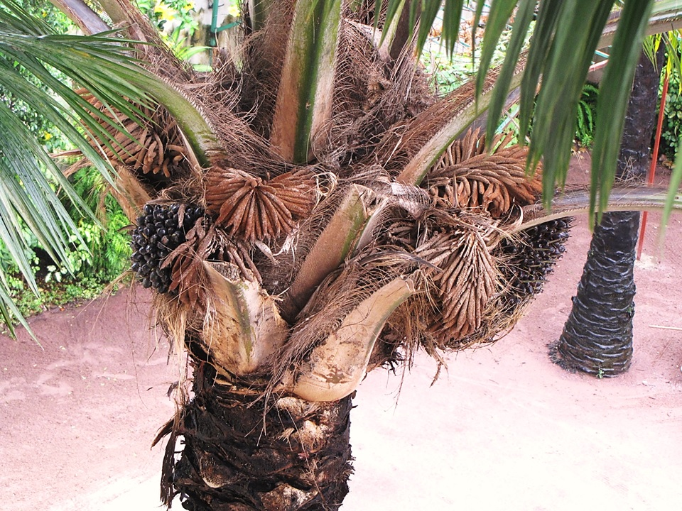
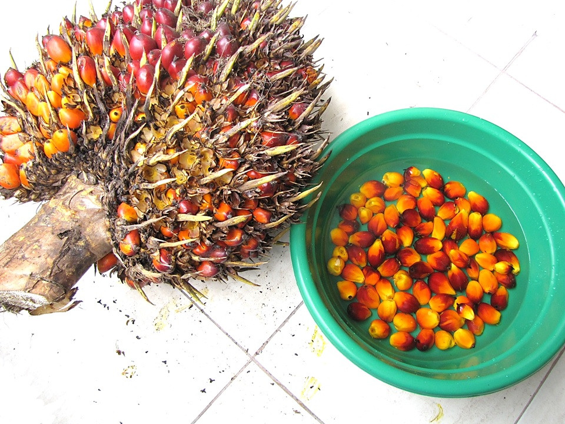
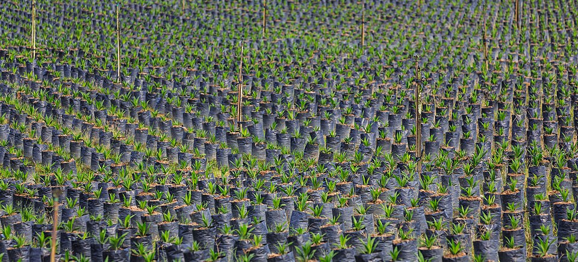

Panduan Lengkap Budidaya dan Pemeliharaan Kelapa Sawit
| Persiapan Lahan & Pembibitan | Penanaman & Pemeliharaan Rutin |
|---|---|
|
 I. Pendahuluan & Syarat Tumbuh |
 IV. Prosedur Penanaman & Konsolidasi |
|
 II. Penyiapan Lahan & Penataan Kebun |
 V. Manajemen Pemeliharaan Tanaman Rutin |
|
 III. Bahan Tanaman & Teknik Pembibitan |
Persiapan Lahan dan Pembibitan
I. Pendahuluan & Syarat Tumbuh
Tingkat produksi yang mungkin dicapai dari suatu kebun kelapa sawit merupakan hasil interaksi antara faktor potensi genetik varietas tanaman, lingkungan tempat tumbuhnya, dan pengelolaan dalam budidayanya. Produksi tinggi akan dicapai jika digunakan varietas sawit unggul dan ditanam di lokasi yang paling sesuai dengan menerapkan pengelolaan yang baik.
A. Unsur Iklim Makro
- Curah Hujan: Tanaman kelapa sawit praktis berproduksi sepanjang tahun sehingga membutuhkan suplai air relatif sepanjang tahun pula. Curah hujan yang ideal berkisar 2.000-3.500 mm/tahun yang merata sepanjang tahun dengan minimal 100 mm/bulan. Di lokasi dengan curah hujan kurang dari 1.450 mm/tahun dan lebih dari 5.000 mm/tahun sudah tidak sesuai untuk sawit. Rendahnya curah hujan tahunan berkaitan dengan defisit air dalam jangka waktu relatif lama sedangkan curah hujan yang tinggi berkaitan dengan rendahnya intensitas cahaya.
- Suhu Udara: Suhu rata-rata tahunan untuk pertumbuhan dan produksi sawit berkisar antara 24-29°C, dengan produksi terbaik antara 25-27°C. Tinggi tempat optimal adalah 200 m dpl, dan disarankan tidak lebih dari 400 m dpl.
- Intensitas Cahaya Matahari: Intensitas cahaya matahari menentukan laju fotosintesa pada daun yang pada akhirnya menentukan tingkat produksi. Kelapa sawit memerlukan lama penyinaran antara 5 dan 12 jam/hari.
B. Karakteristik Tanah dan Lahan
- Topografi: Faktor topografi berkaitan dengan derajat kemiringan lereng dan panjang lereng yang berpengaruh nyata terhadap erosi tanah, biaya pembangunan infrastruktur serta biaya mobilisasi dan panen. Kemiringan optimal adalah kurang dari 12° (23%) dan tidak disarankan lebih dari 20° (38%).
- Sifat Fisik Tanah: Kedalaman efektif solum tanah yang baik adalah > 75 cm dengan tekstur lempung atau liat, serta perkembangan struktur yang kuat dan konsistensi gembur agak teguh. Jika tekstur tanah didominasi liat maka drainase tanah akan terhambat, sebaliknya jika didominasi pasir maka tanah cepat kering sehingga perkembangan akar akan terhambat.
- Kesuburan Tanah (Sifat Kimia): Faktor kesuburan ini mencakup beberapa sifat kimia tanah yaitu kemasaman (pH) ideal berkisar antara 4,0-6,0, kapasitas tukar kation (KTK), kejenuhan basa, ketersediaan unsur hara makro dan mikro, serta kadar bahan organik.
II. Penyiapan Lahan & Penataan Kebun
A. Metode Pembukaan Lahan Tanpa Bakar (Zero Burning)
Pembukaan lahan perkebunan kelapa sawit adalah kegiatan membersihkan lahan dari vegetasi lainnya, baik berupa pepohonan, belukar, maupun rerumputan agar siap diolah untuk persiapan penanaman. Teknik pembukaan lahan dilakukan tanpa bakar. Sisa tanaman, cabang, dan ranting dipotong sependek mungkin lalu ditumpuk dalam lajur (gawangan) di antara rencana barisan tanaman dan dibiarkan melapuk secara alami.
Penggunaan formula mikroba pelapuk sangat dianjurkan untuk memercepat proses pelapukan tumpukan bahan organik tersebut sekaligus meningkatkan kesuburan tanah. Khusus pada peremajaan sawit tua, bagian ujung batang diletakkan dalam gawangan dan segera ditanami tanaman penutup tanah untuk pencegahan hama kumbang tanduk (Oryctes).
B. Infrastruktur dan Sistem Drainase
- Jalan Kebun: Pembangunan jalan dimaksudkan untuk memudahkan mobilitas manusia, pengangkutan sarana produksi, dan hasil panen dengan tetap memerhatikan asas efisiensi biaya. Jalan yang dibangun meliputi jalan pengumpul dan jalan utama.
- Sistem Drainase: Meskipun tanaman sawit membutuhkan banyak air, tetapi tidak dapat tumbuh dan berproduksi dengan baik dalam keadaan tergenang atau sering tergenang. Pembangunan jaringan drainase (primer, sekunder, dan tertier) terutama penting untuk lahan datar dan lahan pasang surut, serta dilengkapi dengan pintu-pintu air pengendali otomatis. Drainase berlebihan atau kurang memadai sama-sama berpengaruh buruk terhadap pertumbuhan kelapa sawit.
C. Jarak Tanam dan Pengajiran Segitiga Sama Sisi
Jarak tanam yang digunakan menentukan jumlah tanaman setiap satuan luas (ha). Jarak tanam baku yang dianggap optimal pada topografi datar adalah 9x9 m dengan sistem segitiga sama sisi. Jika digunakan sistem tanam bujur sangkar akan dihasilkan populasi tanaman sebanyak 121 pohon, tetapi jika segitiga sama sisi akan diperoleh 142-143 pohon/ha karena lebih efisien dalam pemanfaatan ruang dan sumberdaya lahan.
Untuk penentuan titik ajir secara cepat dan praktis pada perkebunan rakyat, dapat menggunakan tali sepanjang 18 m yang dipasangi pasak di masing-masing ujung dan di titik pertengahannya sehingga jarak antar pasak menjadi 9 m. Dengan menarik pasak tengah ke arah barisan kedua sampai tali menegang, otomatis akan terbentuk segitiga sama sisi 9x9x9 m yang presisi.
Di lahan berlereng curam yang memerlukan terasering, tidak bisa lagi diterapkan sistem segi tiga, tetapi mengarah ke empat persegi panjang. Lahan berbukit harus diajir mengikuti garis kontur dan dibuatkan pencegahan erosi mekanis berupa teras bangku (lebar 3-4 m) atau teras individual/tapak kuda (lebar sekitar 3 m) pada setiap titik penanaman.
D. Galian Lubang Tanam
Lubang tanam disiapkan secara manual 2-4 minggu sebelum tanam, sebaiknya paling lambat 4 minggu. Ukuran lubang berkisar antara 60 dan 90 cm dengan kedalaman 60 cm, tergantung kondisi tanah. Jika tanah gembur dan subur, cukup berukuran 60x60x60 cm. Tanah galian harus dipilah dua yaitu lapisan atas (top soil) dan lapisan bawah (sub soil) serta diletakkan terpisah pada sisi lubang yang berbeda.
E. Penanaman Tanaman Penutup Tanah (LCC)
Tanaman penutup tanah dari jenis kacangan (legume) seperti Pueraria phaseoloides, Calopogonium caeruleum, atau Mucuna bracteata dianjurkan ditanam segera setelah pemberantasan gulma awal.
Manfaat tanaman penutup tanah adalah melindungi permukaan tanah dari bahaya erosi, memperbaiki struktur tanah lapisan atas, memperbaiki kesuburan terutama nitrogen, meningkatkan bahan organik, menjaga fluktuasi suhu tanah, dan mengurangi biaya pengendalian gulma. Benih ditanam dalam larikan dengan jarak 1,5 m dari pokok kelapa sawit dan dipupuk dengan fosfat alam sebanyak 30-50 kg/ha.
III. Bahan Tanaman & Tenik Pembibitan
A. Jenis Kelapa Sawit Komersial (Tenera)
Berdasarkan ketebalan cangkangnya, kelapa sawit dikelompokkan dalam tiga tipe:
- Dura: Mempunyai cangkang tebal (6-8 mm), porsi mesokarp terhadap buah berkisar 35 - 65%, kernel besar, tetapi minyak terekstrak rendah (17-19%). Cangkang tebal dura diduga dapat memperpendek umur mesin pengolah.
- Pisifera: Tanpa cangkang, kernel kecil dengan lapisan fiber tipis, proporsi mesokarp tinggi, tetapi sebagian besar betinanya steril sehingga sangat jarang menghasilkan buah.
- Tenera: Merupakan hasil silangan antara dura (bunga betina) dan pisifera (serbuk sari). Karakteristiknya memiliki cangkang tipis (0,5 - 4 mm), bunga betina tetap fertile, proporsi mesokarp tinggi (60-95%), dan kadar minyak tinggi berkisar 22 - 25% bahkan mencapai 28%. Hibrida tenera inilah yang digunakan dalam budidaya komersial.
Penting: Benih hibrida asli dengan yang palsu tidak dapat dibedakan secara kasat mata, baik ukuran, bentuk, warna, maupun bibitnya. Pembelian harus dilakukan hanya dari produsen resmi bersertifikat demi menghindari kerugian besar saat fase berproduksi.
B. Sistem Pembibitan Dua Tahap (Double Stage)
1. Pembibitan Pendahuluan (Pre-Nursery)
Kecambah ditanam di dalam kantong plastik kecil (polibag ukuran 15x20 cm) yang diisi tanah top soil terayak dan disusun rapat di bedengan. Bedengan diberi naungan atap pelepah atau paranet dengan intensitas cahaya sekitar 40%. Kecambah ditanam sedalam 4 cm dengan posisi calon akar (radikula, berujung tumpul) mengarah ke bawah dan calon tunas (plumula, berbentuk runcing) ke arah atas. Bibit dipelihara di sini selama 3 - 4 bulan dengan penyiraman rutin dan pemupukan urea seminggu sekali (2 gram/liter air).
2. Pembibitan Utama (Main Nursery)
Bibit berumur 3-4 bulan (daun mencapai 3 - 4 helai) dipindahkan ke polibag besar ukuran 40 x 50 cm berisi 25-30 kg tanah yang dicampur SP-36 sebanyak 25 - 30 g/kantong. Polibag disusun di lapangan dengan jarak tanam segitiga sama sisi 90x90x90 cm. Pemeliharaan meliputi penyiraman rutin (setiap bibit membutuhkan air rata-rata 2,25 liter/hari) dan penyiangan gulma manual sebulan sekali.
3. Rekomendasi Pemupukan Berkala di Main Nursery
Pupuk ditaburkan secara merata di sekeliling bibit kira-kira 5 cm dari pangkal batang dengan hati-hati. Berikut adalah standar dosis pupuk NPK Compound (15:15:6,5 atau 12:12:17,2) di pembibitan utama:
| Umur Bibit (Bulan) | Dosis Pupuk NPK Majemuk (gram/pohon) |
|---|---|
| 4,0 s.d. 5,5 | 5 |
| 6,0 s.d. 6,5 | 7 |
| 7,0 | 10 |
| 8,0 | 20 |
| 9,0 s.d. 10,0 | 25 |
| 11,0 s.d. 12,0 | 30 |
| 13,0 s.d. 14,0 | 35 |
*Pemupukan dihentikan satu bulan sebelum dipindahkan ke lapangan.
Penanaman dan Pemeliharaan Rutin
IV. Prosedur Penanaman & Konsolidasi
- Persiapan Bibit: Sebulan sebelum tanam, polibag bibit diangkat lalu diputar 180° dan diulangi dua minggu kemudian untuk memutus perakaran yang menembus tanah guna mengurangi stres tanaman.
- Prosedur Penanaman: Penanaman dilakukan pada awal musim hujan. Taburkan pupuk dasar berupa SP-36 (100-200 g) atau fosfat alam (250-500 g) ke dalam lubang. Sebagian pupuk dicampur dengan tanah top soil, sisanya ditabur di dasar lubang. Timbun lubang dengan tanah sub soil hingga kedalaman yang pas agar pangkal batang (leher akar) bibit kelapa sawit rata dengan permukaan tanah asli. Sobek dasar polibag secara melingkar, masukkan bibit ke lubang secara hati-hati, iris dinding polibag lalu cabut plastiknya ke atas, kemudian timbun dengan top soil sambil ditekan merata.
- Konsolidasi & Penyulaman: Lakukan pemeriksaan berkala terhadap tanaman yang miring akibat angin/hujan untuk ditegakkan kembali dan diikat pada tiang penyangga. Tindakan penyulaman untuk mengganti tanaman mati atau abnormal harus dilakukan sedini mungkin menggunakan bibit pengganti seumur, dengan batas maksimal tidak melebihi umur tanaman 1 tahun di lapangan.
V. Manajemen Pemeliharaan Tanaman Rutin
A. Penyiangan Gulma
Pengendalian gulma tidak dimaksudkan untuk membuat permukaan tanah bebas sama sekali dari rumput (clean weeding) guna mencegah erosi. Gulma berbahaya seperti ilalang, Mikania, teki, dan tumbuhan berkayu wajib diberantas karena memiliki daya saing hara yang sangat tinggi. Sedangkan gulma lunak seperti babadotan, rumput kipahit, dan pakis ditoleransi untuk menahan erosi tanah. Bersihkan area piringan secara berkala radius 1,5-2 m dari batang untuk mempermudah pemupukan dan pengumpulan brondolan buah.
B. Standar Pemupukan Fase Tanaman Belum Menghasilkan (TBM)
Pemupukan dilakukan 2-3 kali setahun pada waktu curah hujan kecil (>60 mm/bulan) menggunakan sistem tebar di piringan atau sistem benam (pocket) pada lahan miring/rendahan. Jarak waktu penaburan Dolomit/Rock Phosphate dengan Urea/ZA minimal berselang 2 minggu.
1. Standar Dosis TBM pada Tanah Mineral (gram/pohon):
| Umur (Bulan) | Urea | TSP | MOP (KCI) | Kieserite | HGF-B | Rock Phosphate |
|---|---|---|---|---|---|---|
| Lubang Tanam | 500 | |||||
| 1 | 100 | |||||
| 3 | 250 | 100 | 150 | 100 | ||
| 5 | 250 | 100 | 150 | 100 | ||
| 8 | 200 | 250 | 350 | 250 | 20 | |
| 12 | 500 | 200 | 350 | 250 | ||
| 16 | 500 | 200 | 500 | 500 | 30 | |
| 20 | 500 | 200 | 500 | 500 | ||
| 24 | 500 | 200 | 750 | 500 | 50 | |
| 28 | 300 | 750 | 1.000 | 750 | ||
| 32 | 300 | 750 | 1.000 | 750 |
2. Standar Dosis TBM pada Tanah Gambut (gram/pohon):
| Umur (Bulan) | Urea | Rock Phosphate | MOP (KCI) | Dolomit | HGF-B | CuSO4 |
|---|---|---|---|---|---|---|
| Lubang Tanam | 25 | |||||
| 3 | 100 | 150 | 200 | 100 | ||
| 6 | 150 | 150 | 250 | 100 | ||
| 9 | 150 | 200 | 250 | 150 | 25 | |
| 12 | 200 | 300 | 300 | 150 | ||
| 16 | 250 | 300 | 300 | 200 | 25 | |
| 20 | 300 | 300 | 350 | 250 | ||
| 24 | 350 | 300 | 350 | 300 | 50 | |
| 28 | 350 | 450 | 450 | 350 | 50 | |
| 32 | 450 | 450 | 500 | 350 |
C. Standar Pemupukan Tanaman Menghasilkan (TM)
Dosis pupuk ditentukan berdasarkan kelompok umur, jenis tanah, hasil analisa daun, dan produktivitas tanaman dengan sasaran tepat jenis, dosis, waktu, dan metode:
| Jenis Tanah | Umur (Tahun) | Urea | SP36-/RP | MOP (KCI) | Kieserite / Dolomit | Jumlah |
|---|---|---|---|---|---|---|
| Tanah Mineral (kg/pohon/tahun) |
3-8 9-13 |
2,00 2,75 |
1,50 (SP-36) 2,25 (SP-36) |
1,50 2,25 |
1,00 (Kieserite) 1,50 (Kieserite) |
6,00 8,75 |
| 14-20 | 2,50 | 2,00 (SP-36) | 2,00 | 1,50 (Kieserite) | 7,75 | |
| 21-25 | 1,75 | 1,25 (SP-36) | 1,25 | 1,00 (Kieserite) | 5,25 | |
| Tanah Gambut (kg/pohon/tahun) |
3-8 9-13 |
2,00 2,50 |
1,75 (RP) 2,75 (RP) |
1,50 2,00 |
1,50 (Dolomit) 2,25 (Dolomit) |
6,75 9,50 |
| 14-20 | 1,50 | 2,25 (RP) | 2,00 | 2,00 (Dolomit) | 8,00 |
D. Pemangkasan Pelepah (Pruning) dan Kastrasi
- Pemangkasan Pelepah: Pemangkasan dilakukan untuk membuang daun-daun tua atau tidak produktif demi melancarkan sirkulasi udara, membantu penyerbukan alami, dan mencegah buah brondolan terjepit pelepah. Dilakukan setiap 6 bulan sekali untuk TBM dan 8 bulan sekali untuk TM. Daun yang dipangkas dipotong mepet menggunakan dodos dengan menerapkan sistem Songgo Dua (menyisakan 28-54 helai daun pada pokok).
- Kastrasi: Pembuangan bunga jantan maupun bunga betina secara menyeluruh sejak tanaman mengeluarkan bunga pertama (umur 12 bulan setelah tanam) sampai tanaman berumur 33 bulan (6 bulan sebelum panen pertama). Dilakukan sebulan sekali untuk merangsang pertumbuhan vegetatif dan menghilangkan sumber infeksi hama/penyakit.
Sumber: Panduan Lengkap Budidaya dan Pemeliharaan Kelapa Sawit